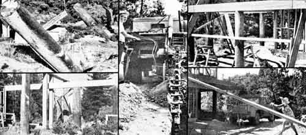
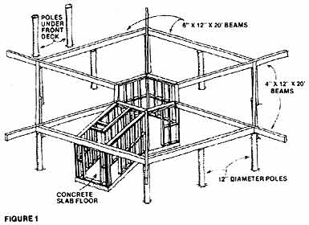
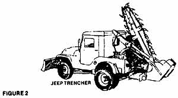
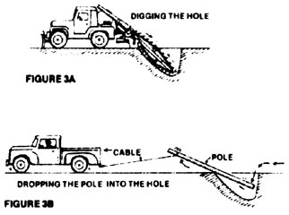
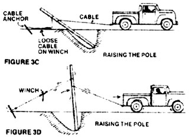
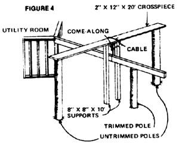
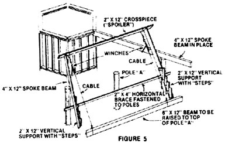
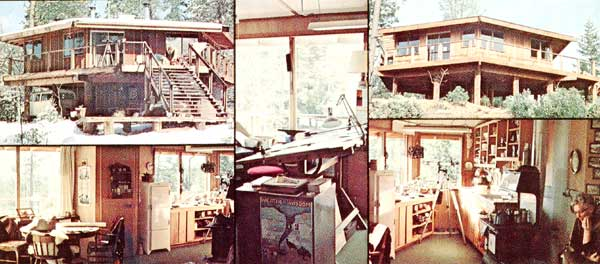

These pictures tell - perhaps better than words - how the author and his family managed to elect the foundation for their elevated dwelling. The photo at lower left shows how Dave Comstock used two talk non-adjacent poles to lift a large "spoke beam" into place. At lower right, Ardis Comstock - aided by a block and tackle (partially visible) - hoists a 300-pound roof beam into the air.
In 1971, Dave Comstock resigned his job as a book designer with the University of California Press in Berkeley and began to save money for the day when he and his wife could build their own "dream house" on 19 acres of land near the Tahoe National Forest. Well, Dave and Ardis Comstock have finally built that residence . . . and what a house it turned out to be! Here's their story.
It's been almost three years since our last report (see "The Comstock Bonanza", MOTHER NO. 26, pages 24-25), and a lot's happened since then. The biggest news is that we've finally built our dream home in the woods: a 1,000-square-foot hexagonal structure that sits a full eight feet off the forest floor!
The idea of building an "up in the air" house came from Fred Dyer-Bennet - our friend and architect - who'd drawn up some preliminary plans for us back in 1972 . . . plans that depicted a six-sided dwelling perched atop our choice of wooden poles or concrete columns. (Given the beautiful natural surroundings, we found the idea of concrete pillars hard to accept . . . so we voted for the poles.)
According to Fred's plans, the house would rest on a network of large beams arranged like the spokes and rim of a giant wagon wheel turned on its side. The hub of the wheel was supported by a small, six-sided utility room.
We found Fred's concept exciting . . . but also somewhat troubling. Ardis (my wife) and I had never built a house before, and we wondered whether we could handle the construction of a conventional home . . . let alone an elevated, hexagonal dwelling! And, since both of us are on the crusty side of forty, we wondered whether house-building would be good for us physically.
Being adventurers at heart, though, we went ahead with the project. And we learned that there's no reason in the world why a middle-aged couple can't build a home in the woods?even a large, six-sided one?if the task is approached with a good deal of desire, fortitude, and imagination.
Fred's plans called for thirteen 12' poles (Fig. 1)?eleven to support the house and two for the deck-each of which would be set five feet deep into the ground. (As it turned out, we sank at least two poles seven feet, and one of them?due to site irregularities?had to be nearly 16' long!)
When we discovered that the 13 supports would cost us about $40 each, new, we did what any dedicated MOTHER reader would do . . . we started looking for used ones. And, interestingly enough, we found that we could obtain such timbers free for the hauling from our local utility. You see, when a municipality decides to put its powerlines underground (as nearby Nevada City, California was doing when we began our search for poles), the electric company removes its lines . . . then Ma Bell follows suit, takes out her cables and poles, and gives the latter away to folks whose names are on a (very long) waiting list.
We wasted no time getting our name on that list. And, surprisingly, we were rewarded sooner than we'd hoped. The reason: Not everyone who's asked for them is ready at a moment's notice to go pick up telephone poles . . . and that readiness is sometimes what it takes. Thus, one morning we were awakened by a call from a phone company employee who wanted us to hurry to a city 40 miles away to pick up a load of poles. Bleary?eyed, we rented a truck at 7:00 a.m., drove out to the town, and got there just in time to have the supports loaded into the truck by a telephone company forklift!
(In case you're wondering how we managed to unload 500-to 600-pound poles from the back of the vehicle without the aid of a crane or a forklift, the answer's simple: We merely tied one end of a pole to a nearby large tree and drove the truck forward until the big timber slid out onto the ground.)
I might mention, by the way, that we didn't always have to go after the poles ourselves. Once?when we were still living in the city?a crew came out to replace the power pole in front of our house, and we got to keep the old one. And another time?while we were in Canada on vacation?the phone company delivered twelve poles to our driveway! (How's that for service!)
From the very first, I worried about how we'd dig the holes in which to set our large wooden columns. My attempts to locate someone with a 24" auger had failed . . . and yet we had to find some way to make two-foot-diameter holes in the ground (that is, excavations large enough to accept our 12"-diameter poles and leave 6" of clearance all the way around each one).
We found the solution to our problem at a local construction equipment auction. There, we discovered a pair of exceedingly interesting (and useful) implements: [1] a two-wheeled ditching machine that was operated like a rototiller, and [2] a Jeep with a dozer blade on the front and a trench-digger on the back (Fig. 2). The second device especially captivated our interest, since the vehicle could?depending on whether it was kept stationary or allowed to travel forward slowly make either a single 5'-deep hole in the ground or a long, narrow (12" wide) trench. (And then, by moving the rear-mounted digger arm sideways on a track, one could easily widen that trench.)
As it turned out, the rototiller?like ditcher sold far much mare than my top bidding price . . . but I was able to "steal" the Jeep/trencher for $1,550. And for a good part of one summer, two of our sons had a merry time using the piece of equipment to dig postholes, leach lines, and utility ditches on our site. The odd-looking machine proved fully capable of doing all our excavation work . . . and did it better (for our purposes, at least) than any other implement could've done!
By June 1973 we'd dug ail the necessary holes . . . but we were so far from knowing how to set our uprights into them that?for a while?we entertained the idea of enticing some young, strong backs to our site with promises of food and drink, for a "pole-raising" party. (The idea being that we'd just raise each pillar by means of sheer heave-ho muscle power.)
Then I came up with a better idea. Earlier, I'd tried to imagine how my ancestors might have attacked the problem of raising a dozen oversize poles . . . and I concluded that most likely?they would've put their animals to work. Which led me to say to myself: "in that case, I should put my truck to work!"
So I did. After selecting a pole (and a hole) to work on, f got in my trusty pickup and drove to a spot where I could [1] hitch a steel cable to the rear of the vehicle, [2] run that cable across the top of a hole, and [3] couple it to the end of the giant log. I then got back in the truck, and slowly drove forward, dragging the huge timber behind me . . . until? thump!?the trailing end of the pole dropped into the hole (Fig. 3-B). At this point I stopped, backed up a bit, and let the pole slide slowly to the bottom of the ditch.
Next, I unfastened the cable from the big log, drove around to the other side of the hole, and hooked the cable up again as before. Then I attached another cable (this one with a portable winch?or "come-along"?on it) to the pole, and leaving ample slack in the line?anchored the free end of the cable to a sturdy stake located a few yards away on the far side of the hole. (See Fig. 3-C.)
Finally, I got in the truck once more, slowly started to drive away from the hole . . . and stopped when the pole looked approximately vertical (Fig. 3-D). Then, by making adjustments alternately to the winch and the truck, I was able to fine-tune the upright until it was exactly plumb . . . after which I steadied it with braces and disconnected the two cables.
This entire operation had taken no more than 20 minutes, and I'd done it without the aid of a single helper . . . let alone an army of "strong young backs"!
Of course, I knew I'd been lucky to have been able to adjust that first pole's position so easily simply by moving the truck. (This can be a difficult maneuver on uneven terrain.) Later, I refined my technique by using two winches?one on either side of the pole?to make the final adjustments. (Also, although I'd proven to my satisfaction that one person could set up a heavy timber alone, I later learned that two people-and, at times, two vehicles?could do the job faster.)
It was, of course, the unusual "slanted" shape of the excavations made by our Jeep that originally suggested the above technique to me, but I think it's worth pointing out that any hole?dug by any means?can be modified to accept logs in this manner. (All you have to do is elongate the hole in one direction with any kind of an excavating tool . . . even a simple shovel.)
Having solved the problem of how to erect that first pole, we stopped and thought about how we could best apply the procedure we'd just learned to the other uprights we had to set. (This, by the way, was a pattern we followed throughout the construction project. First we'd try a new idea on one segment of the house . . . then?if it was a success-we'd decide how to apply the technique most efficiently to the other segments.)
At length, we decided to go ahead and drop the remaining poles in their ditches, but not raise them until we were sure we could maneuver the truck around the increasing number of obstacles. Only after we had a plan of action did we proceed to erect all the poles.
It's very important, we learned, to stop several times a day to think about where you are and where you're going. If you do this, you can often prevent a dangerous or awkward situation from developing, and sometimes think of a better way to go about what you're doing.
We did most of our thinking in a small, portable swimming pool that we bought at a garage sale for $40. Whenever the going got rough, or too hot?or just confused?we headed for the little "think tank" to mull things over. As it turned out, we solved a lot of problems in that $40 pool. In fact, it may have saved our marriage (along with the entire project)!
After we had erected, aligned, and tamped dirt around each of the 13 vertical support poles?and built our new home's small, central utility room, which consists of nothing more than a six-sided stud-wall structure built over a poured-concrete floor?it was time to lift the six big "spoke" beams into place. (These beams radiate away from the center of the building, like the spokes of a wagon wheel . . . hence the name spoke beams. )
Our first task was to figure out how to move the 4" X 12" X 20' timbers from our lumber pile to the construction site. Ardis and I found that if we lifted together we could raise one end of one beam . . . so we lifted one end of each beam-to-be moved into the back of our truck. Then, while Ardis drove, I trotted along behind and supported the piece's trailing end!
And then the real work began: We had to devise a way to lift the several-hundred-pound beams into their proper places, a full eight feet off the ground! Ultimately, we hit upon the idea of using some of the still-untrimmed-to-final-length timbers in our new "pole forest" to help us raise the big spoke girders onto their appropriate shorter, trimmed mounts. Here's what we did:
First we joined two of the tall, non-adjacent poles at the top with a 2" X 12" X 20' board (the heaviest and strongest 20' piece of lumber that we could carry up a ladder). Next, we placed a pair of reinforcing 8" X 8" X 10' posts vertically beneath the 2" X 12" crosspiece (and nailed them in place) so that the 2"thick plank would not break under the load of a heavy spoke beam. Then we simply looped a cable and winch around the crosspiece, attached the line to a spoke beam positioned directly below, and began cranking the big rafter up (Fig. 4).
When we had the first spoke beam securely in place, we stopped and enjoyed a short celebration. Once again, we had?with the aid of a little imagination done the "impossible"!
After raising all six spoke beams into place, we turned our attention to the problem of how to lift the larger (6" X 12" X 20') outer beams?the ones around the perimeter of the house?onto their supports. (Because these timbers had to rest atop the same poles? now trimmed -we'd used as supports during the hoisting of the spoke beams, we were forced to devise a new method of lifting the heavy joists.)
We solved this problem (as you can see from Fig. 5) by leaning two 2" X 12" boards?joined at the top by a 2" X 12" crosspiece?against the inside faces of two adjacent spoke beams, and nailing a series of steps to each of the near?vertical supports. By means of this arrangement, Ardis and I?working together?were able to lift one end of a beam onto the first step, lift the other end onto the next step, and so on, until the timber was about shoulder high. Then we stood on ladders and?using a pair of come-alongs (one near either end of the top?mounted horizontal cross-piece)?winched the giant beam the rest of the way up.
This wasn't?by far?the most leisurely job in the world, but it did get the job done. And it worked for all six perimeter joists.
We didn't have to resort to special lifting devices again until we were ready to build our new home's roof (which?like its foundation?rests on six "spoke" beams). Here, for the first time, we used a block and tackle.
Our "B & T" setup offered a number of advantages?for this application?over a cable and winch. First, it could be operated from the ground (no need to stand atop a ladder, as with the come along). Second, the block and tackle allowed us to work faster. And third, the amount of "lift" provided by a B & T is limited only by the amount of rope available. (Our winches could lift an object a distance of 12 feet . . . and no more.)
Of course, the block and tackle won't automatically hold its load . . . you have to tie the rope if you want to stop halfway through a hoist. Also, the great quantity of loose rope that lies near one's feet during the operation of a block and tackle does create a definite hazard.
Nonetheless, the B & T worked well for our purposes, because Ardis was able to raise each beam to the elevated floor of our partially completed house in one continuous motion?quite easily, too-simply by pulling a rope at ground level, while I grabbed the rafters as they came up and stacked them. (Once, our neighbors came by just as Ardis was hoisting the last of the 4" X 12" X 24' roof beams up to me, and their mouths dropped open in utter astonishment!)
We then lifted the big rafters into final position in much the same manner that we had lifted the spoke beams earlier, except that this time we used two makeshift scaffolds: one (with a block and tackle) at the center of the house . . . and a shorter frame (sporting a cable and winch) that we could move from corner to corner.
Of course, I haven't told you how we built our carport . . . installed our three wood-burning stoves . . . set up our Mansfield Traveler 910 toilet that uses less than a quart of water per flush . . . or carried out any of the 9,999 other chores that went into the creation of our "dream house".
I do hope I've proven, however, that it's not really all that herculean a task to build a home in the woods . . . even a fairly fancy (if I do say so) six?sided one! All it takes?as I've said before?is desire, fortitude, and imagination. (And a $40 swimming pool!)
We originally budgeted $12,000 for our house . . . which was the amount of cash we thought we could raise by the summer of 1972 (our target date for construction). This money was to have come (and did come) from three sources: [1] A pair of savings accounts?begun in 1968?into which we were putting every dollar we didn't absolutely have to spend. [2] A lumpsum refund (paid to me when I left my city job in 1971) of all contributions I'd made to a retirement plan since 1967. [3] The equity we'd accumulated in the city house we had bought in 1967.
Actually, my original cost estimate was a little low, for if construction had gone ahead on schedule the final cost of our new home (in 1972 dollars) would have been about $14,500. As things turned out, various delays kept us from obtaining our building permit until November 1972 (too late in the year to begin construction in the woods), which cost us another $2,500 due to increases in the price of lumber?and other materials-in 1973.
At least in one instance, though, inflation worked to our advantage. Fortunately for us, our city house (which we'd been renting to a friend for sometime) had gone up so much in value by the time we went to sell it that our equity had more than doubled. . . allowing us to meet the higher lumber and hardware costs, and even upgrade certain items (such as window glass, which we changed from single to double-glazing for better insulation).
In dollars and cents, then, here's what we ended up paying for materials and services (in 1973):
To be sure, $17,000 is a pretty big piece of change to spend on a home in the woods, but it's not an unreasonable sum to spend for a nice house (by city standards). And I think most people who look at our humble abode up close would agree that it is, if nothing else, a nice house.?Dave Comstock.
|
 |
 |
 |
|
 |
 |
 |
|
 |
 |
|